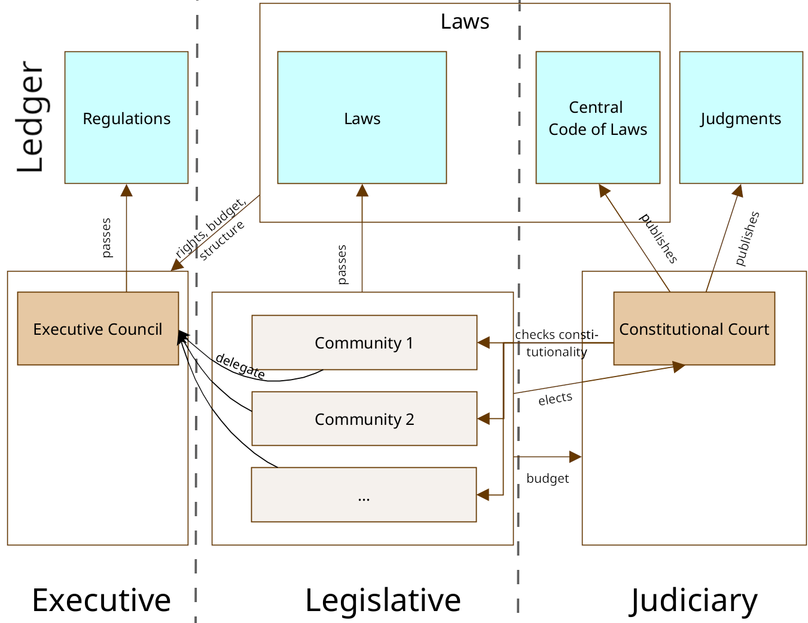

10. State
10.2 Concept
(For each of the newly introduced terms here, a brief definition can be found in the glossary “Kinotarchy”.)
Let us now turn to my actual proposal.
I divide the state into two levels: the central state and the communities. The central state consists of the three well-known pillars of government: the executive, legislative, and judiciary.
The communities are the area where evolution and competition will take place. They are the first half of what radically distinguishes my concept from existing states.
Every citizen is a member of the central state, and its laws apply to all citizens. Additionally, each citizen is a member of exactly one community, meaning that the rules of exactly one community apply to each citizen as well.
So, what is a community?
That is something each community can define for itself! There will be a “null community” that does nothing. It demands nothing from its members and offers them nothing. I do not believe that many citizens will see this as the best solution for themselves. However, those who are convinced that they can live best in anarchy or a libertarian state will have the opportunity, through membership in the null community, to have nothing but the laws and taxes of the central state apply to them.
Most people will be willing to accept additional costs in the form of contributions, taxes or rules in exchange for receiving services and a safety net from their community. Just as we voluntarily take out insurance or pay for memberships today.
Collectively, the communities form the legislative branch of the central state, making the laws. The influence of each community is proportional to how many members it has. Communities are thus somewhat comparable to parties and their results in federal elections. Except that citizens do not simply make a political decision about which party they want to vote for this time around. Instead, by choosing their community, citizens decide under which rules they want to live. Because each community can —within the limits set by the constitution—prescribe rules to its members. To clearly distinguish where a limit on what citizens can do comes from, I will refer to those imposed by communities on their members as “rules”, those imposed by the central state as “laws”.
These community rules apply in addition to all laws of the central state and must not contradict them.
No community may deny its members the right to leave. But communities may set arbitrary conditions under which they accept new members. A community can exclude members (who then join the null community until they are accepted by a different community).
The laws of the central state always apply throughout the entire state territory. The central state police has the right to enforce them everywhere. Which community rules apply to you, and how they are enforced, depends on which community you belong to and who has leased the land you are currently standing on.
The state will only lease land, not sell it. I am assuming that the entire concept from Chapter 9.5, “Land Ownership” has been implemented by this state. There are then five different types of land: City (C), Attached (A), Undeveloped (U), Nature (N), and Infrastructure (I).
Land that the community or its members have leased, and that is not a city (so Type A or U), is referred to as community land. On such land, the community may deploy its own police force, which enforces community rules by coercion. So on community land, the central police and the community police share the monopoly on the use of force.
When dealing with members of other communities (or members who have announced their departure), community police are limited to escorting them off the community land and issuing access bans—the enforcement of which is then monitored by the central police as well.
The leasing rules favor a scenario where a single leaseholder, in this case a community, can fully control an established village or industrial area, ensuring that uniform rules apply to everybody. This allows communities to implement their own societal concepts, which need everyone in an area to adhere to the same rules (they can banish anyone who does not). Thus, they serve as experimental spaces for spatial societal concepts. If something works exceptionally well, it may be adopted by other communities and possibly even by the central state.
In cities, on land leased by companies90, and on land that the state has not leased, the central state holds the monopoly on the use of force. This means that only laws are getting enforced by the police, not community rules.
Community rules still apply to their members, of course. With the threat of expulsion, communities can always compel their members to adhere to their rules, even without the presence of community police. But everybody who is not a member need not care about a communities rules so long as they aren’t on land of that community.
It is likely that certain citizens are prohibited from entering certain areas (since they were banned by the leasing community). It is therefore important that cities and the infrastructure connecting them form a framework of areas which are always accessible to everyone. Since members of different communities can always meet here, cities serve as the melting pots of the entire state.
The goal is to give communities the greatest possible freedom to shape the lives of their members as they see fit, while still maintaining a functioning central state with laws that are getting enforced.
As a counterbalance to the extensive rights of communities, the constitution guarantees every citizen the ability to “vote with their feet” and change communities with minimal effort.
It is their role in shaping the laws of the central state, alongside their right to enforce their own rules with their own police, that grants communities constitution status, and requires every citizen to be a member of exactly one community. Each community influences the central state as a whole, with a unified opinion. The weight of that opinion depends on the number of its members.
How this opinion is formed is left to each community.
Communities are the core idea of this state concept. The central state contains everything that must be regulated in the same way for the whole state, as well as everything at least 60% of the total voting weight of the communities agree should be regulated in a certain way at the central state level. That is a high threshold! Everything else that we normally associate with the term “state” is left to the communities.
Thus, there will always be various approaches to how communities implement these state tasks and what is considered a task of the state or community in the first place. Communities compete with each other for members, creating an evolutionary pressure that ensures the best solutions prevail. Compared to existing nation-states, which also compete with each other but where changing countries is virtually impossible for citizens, this evolutionary pressure is orders of magnitude more effective.
That means, if we manage to properly design the central state with its constitution, there is no need for perfect solutions to all the problems left to the communities! Which will make the constitution significantly shorter and simpler.
Instead, communities can experiment with different approaches, social concepts, and systems. The best ones among them will prevail. Just as capitalism today ensures ever better consumer goods through market competition, communities will ensure ever better social systems. A kind of competition that currently does not exist.
The differences in efficiency between various versions of social systems can be enormous. We are talking about a factor of 10 or more, just between Western democracies in certain areas![57]
That is the potential we can unlock through communities and the evolutionary pressure they generate.
The central state regulates how communities interact with it and with each other, when the rules of which community apply, how to prevent contradictions, who is allowed to coerce citizens, and how it is ensured that citizens may change communities at any time.
One of the many matters left to each community to decide is its internal decision-making process. How it governs itself, how it sets rules for its members, how it behaves in the legislative process of the central state: all these things can be decided by each community in its own way. This does not have to be democratic, let alone conform to the practices of a representative democracy.
There are so many different ways a community could be structured, how and whether its members are involved in decision-making. Communities are completely free to try out any of them and use them to attract members. It could be a direct democracy, with constant citizen referendums. A philosopher-king, selected based on certain qualifications and subject to restrictions in turn. Representatives could be chosen by lot. It could be a council democracy, where each group sends representatives to the next higher level. An oligarchy, where seats are auctioned off to the highest bidder. A dictatorship. A classic parliamentary democracy, with elected representatives. An AI government, where the target function of the AI is defined at the founding of the community and all subsequent decisions are made by this AI. A community that makes its decisions based on the results of prediction markets91. Or one of countless combinations thereof. Or a completely different possibility, perhaps even one that no one has thought of yet.
A central bet of this state concept is that communities will need good decision-making structures to be able to provide their members with efficient, well-functioning social systems. That communities offering this will be more successful (measured by how many members they have). And that good decision-making structures go hand in hand with thoughtful decisions at the central state level.
That the communities are the ones voting on laws is what I have used to come up with a name for this state concept:
“kinotarchy”, the rule of communities.
The second half of what radically distinguishes my concept of a state from existing states is the use of a blockchain.
Blockchains are software. They provide a decentralized, publicly accessible book that can be modified by anyone according to specific rules, along with a complete history of when and how the book’s content has changed. This change history cannot be falsified, and the book can only be altered according to the predefined rules. These guarantees are what make blockchains special.
The blockchain is the technological foundation on which digital currencies like Bitcoin and Ethereum are based. Since the technology is used for money, it has been thoroughly scrutinized for vulnerabilities. Normally, it is problematic to use software as a necessary part of a government system because it is so fragile and short-lived. Blockchains, by contrast, are durable and, due to their architecture, extremely robust.92 Resilience in many dimensions is their key innovation and the reason why they have become dominant in the realm of digital currencies.
Ordinary citizens will only rarely need to interact with the state blockchain93: only certain public data, such as community membership, must be registered there by each citizen. Unlike in a software-enabled direct democracy, the user interface is not crucial for the functioning of the state. Instead, state processes like legislation work better thanks to the blockchain than they would without this tool.
To describe the concept in a technology-independent way, I will from now on use the term “public ledger” (or simply “ledger”) for the blockchain. Because that is exactly what a blockchain can provide us: a public ledger, a public source of information with associated algorithms, with guaranteed properties: decentralization, tamper-resistance, and historicization*. In other words, the data stored on the public ledger and its history (when and how the data has changed) are replicated across multiple computers and can be accessed by anyone, the history is immutable, and the data can only be changed according to predefined rules.
As a result of these properties, we achieve fault tolerance and traceability of the state processes that we map onto this public ledger. By replacing existing manual state processes with automated solutions, we also gain efficiency and speed as new characteristics.
The following parts of the state will be managed through the public ledger: the entire legislative process, a part of the judiciary (appointment of constitutional judges, rulings of the constitutional court, legal code), and a part of the executive (councils and their votes).
This means that for all these parts of the central state, we obtain the listed properties. This makes the central state faster, more efficient, and more resistant to forgery, bribery, disruption, and other attacks.
Such a ledger is far better than simply having government buildings somewhere, with officials, archives, and centralized databases that carry out these processes manually or in a traditionally digitized manner. Traditionally digitized processes can be fast and efficient too. But a centralized database fulfills none of the other characteristics of the public ledger and would, on the contrary, be more susceptible to manipulation than analog processes (since it isn’t traceable).
These officials with their stacks of files are, in a very real sense, the state. And the same applies in our case for the ledger – it can be said to be the state. In other words: by using blockchain technology, we get a state that is decentralized, tamper-proof, historicized, fault-tolerant, and traceable in its processes. And such a resilient state—that is something extremely desirable!
Anyone can create any number of accounts on this public ledger for a small fee, and publish any data. They can be created and managed by individuals, communities, companies, associations, or anyone else. Comparable to email inboxes, where anyone can have any number of them, and no one controls their creation. These accounts can confirm data published by others and express trust in other accounts. This will be used by the central state and communities to generate reliable data, especially in citizen accounts. Citizens and institutions can also use it independently of state and communities to build trust networks.
With the exception of young children, every citizen has a citizen account on this ledger, which they manage themselves and for which the ledger ensures uniqueness based on a citizen number. Citizens use it to publish data confirmed by the central state, such as their name and date of birth, and their community membership, which is confirmed by their community. This account functions as a citizen’s digital ID card.
Each community also has its own account on the ledger, to provide this confirmation to its members, and to allow the ledger to calculate the voting weights of the communities.
A significant advantage here is that the ledger is tamper-proof and traceable. As a result, there is no need for another central state authority we must trust to calculate these values correctly. Anyone can verify them themselves based on the public data on the ledger. And because these calculations are inexpensive, they are done daily instead of every four years, allowing the entire political system to respond much faster to changes.
Based on these voting weights, the ledger will enable votes (e.g., “Do the communities approve a law?”) and elections (e.g., “Who should become the new constitutional judge?”).
The constitution initially defines a central legislature as a decision-making body, which enacts central laws. Each community has voting weight in it corresponding to how many members it has94. These central laws can then create councils (part of the executive) and additional legislative bodies (collectively referred to as “bodies” from now on).
The central legislature can delegate part of its own powers to these new bodies to make decisions in a specific area and thus reduce its workload. The new bodies can repeat this process as needed, creating a whole chain of subordinate bodies (although councils cannot create legislative bodies).
In all these bodies, voting is conducted through the communities, not directly by the citizens. In legislative bodies directly—in councils, by having the communities designate council members who then have the voting weight of the communities that sent them.95
Every time a new body is defined on the ledger through a law or regulation, it includes, in addition to a description of its tasks and rights, a so-called “weighting”. This is a filter for which citizens this council or legislative body represents. For example, this could be all residents of a city. This filtering is done based on data stored in the citizens' ID cards (their citizen accounts). And it determines the influence each community has in this body. For example, if a community has no members in a city, it will have no influence in its city council.
The ledger, with its efficient and fast calculations, together with the intermediate layer of communities, allows this concept to scale indefinitely without overwhelming citizens with constant elections.
Citizens choose to join a community. The community determines the extent to which it involves its citizens in legislative processes and councils.
Bodies can be defined by something else than by spatial region. If, in addition to place of residence, the profession is stored in citizen accounts as well, there could, for example, be a legislative chamber or council for teachers. A body that makes decisions relevant to that profession.
Furthermore, not every vote has to count equally. For example, the weighting for a city council could count each resident of the city fully and each resident of the surrounding area by half, since they also use the city's services, yet it isn’t their center of life.
Apart from the central legislature with its central laws, as the starting point for the legislative and executive branches, the constitution does not chisel anything in stone here. Whatever 60% of the communities decide using central laws, builds the machinery of the state. Which means that the machinery can evolve over time whenever better solutions are found, without requiring a different kind of state or a change to the constitution.
Once the tool of the public ledger is established, it will be used in the country for a variety of purposes, not just those specified in the constitution. Citizens will publish other data on the ledger beyond what is strictly required. For example, that they have completed certain modules in school, and thus possess specific knowledge (the confirmations for this will be issued by the schools just like the analog pins). The accounts will be used for identification on websites, secure encryption or signing of data, and the permanent publication of documents. Here, a network effect similar to that of social networks (WhatsApp, Facebook, ...) comes into play: since everybody has such an account, it suddenly becomes a good solution for many problems, because the solution works for everyone (just as almost everyone uses WhatsApp because you can reach almost anyone through WhatsApp, because almost everyone uses WhatsApp...).
The state itself will also find more applications for this tool than those defined in the constitution. For example, to officially publish documents signed by ministries, to let communities confirm construction projects above a cost threshold through a vote, or to let communities elect the heads of ministries.
Now let's look at the processes defined by the constitution and which of them are handled through the public ledger. Here is a sketch of the structure of the state:

The upper part of the image contains the state publications on the ledger: regulations, laws, as well as the central code of laws and the judgments published by the constitutional judges. Regulations are issued by councils (only an executive council is shown as an example in the image), legislative bodies enact laws (the image doesn’t show the split into different bodies), and the constitutional court publishes the central code of laws and its own judgments. In each of these cases, this occurs through votes on documents published on the ledger.
The lower part of the image contains the bodies that make up the executive, legislative, and judiciary. The following parts of them are managed by the ledger: the communities and their members, the members of the councils, the judges of the constitutional court, and the voting weights of councils and communities.
At the center of the central state is the legislature, consisting of the communities. It elects the constitutional judges (judiciary), and the individual communities send members to the councils (executive). The election of constitutional judges takes place through a citizen election on the ledger, while the appointment of council members is based on data published by the communities in their accounts.
The legislature provides the executive and judiciary with their budget. Through laws, it determines how the executive should be structured and which rights it delegates to it. The same applies to subordinate legislative bodies. All of this occurs through votes by the communities on documents published on the ledger.
The executive is entirely defined by laws and is thus always subject to the control of the legislature (the sum of the communities), which can change these laws at any time.
Compared to the executive, the judiciary is significantly more independent: the legislature controls it through the appointment of constitutional judges and the allocation of its budget. However, it is the constitutional judges, as the top of the judiciary, who are responsible for its structure. Of course, they aren’t administrators by profession. They will delegate these tasks. But the ultimate responsibility for the functioning of the judiciary always lies with the constitutional judges themselves. Decisions regarding the structure of the judiciary, and the publication of this structure, occur through votes by the constitutional judges on documents published on the ledger.
The constitutional court examines whether the communities operate within the framework of the constitution and whether the laws published by the legislature are constitutional and consistent. In this way, the legislature and judiciary oversee each other. The judiciary regularly publishes the effective central laws as the central code of laws. This, along with the publication of constitutional judgments, occurs through the publication of documents on the ledger.
The courts established by the judiciary will use that central code of laws to make their decisions. Additionally, any court can also refer to the laws themselves, as passed by the legislative bodies. For example, if they are not central laws because they were enacted by a subordinate legislative body instead of the central legislature.
If the communities disagree with the publications of the constitutional judges, the central legislature is free to revise the laws based on the justifications. This feedback loop serves to keep the central laws as clear as possible.
In my concept, the central state is responsible for the following areas and must not delegate them to the communities:
• central police, so that laws are effective everywhere, not just where a community police deems it good to enforce them
• foreign policy and military, so that the state presents a unified voice to other countries and so that no single community can initiate foreign policy adventures
• land leases, because the leasing of land determines where the rules of which community apply
• education, so that all children have as equal opportunities in life as possible, instead of being trapped by their parents in a specific community that indoctrinates them with only their views
• public transportation, so that all parts of the country are accessible to everyone (the central state has special rights)
Of course there are many other areas which would benefit from being uniformly managed by the central government across the entire country. Disaster relief, for example. However, none of these are so essential that they need to be enshrined in the constitution. The constitution should be kept as short and simple as possible, so long as that does not limit the overall potential of the state.
The constitution defines three categories of citizens: children, adults, and full-citizens. While every full-citizen is an adult, not every adult is a full- citizen.
The decisive requirement for being a full-citizen is having completed all mandatory education. Citizens who are 18 years old but lack this educational certificate are considered adults but not full-citizens.
Thus, citizens are considered adults upon completing their mandatory education, regardless of their age. As full-citizens, they have more rights in the constitution than mere adult citizens (for example, only they contribute to the voting weight of their communities), and this pattern will continue in the laws.
Education is defined as a fundamental right in the constitution. Therefore, every citizen can, free of charge, pursue further education to become a full-citizen. In light of this, I consider this form of educational discrimination to be acceptable.
Laws should not focus on a rigid age when deciding whom to grant certain rights. Instead, they should consider whether the person is capable of understanding the consequences of their decisions. And this is not dependent on age but on acquired knowledge.
This necessary knowledge should not always be “all mandatory education” either—it should vary depending on the need. For example, a driver's license, fireworks license (allows the person to ignite fireworks), drug seminar, or parenting course (given my education system, certainly often in the form of modules).
This description of my state concept has been kept vague in many places to be more understandable. Those who want to know more about how the individual elements are structured and how they would function together as a state can find a draft constitution in the appendix “Constitution Kinotarchy”. In the following subchapters, I will refer to specific articles of the constitution as needed.